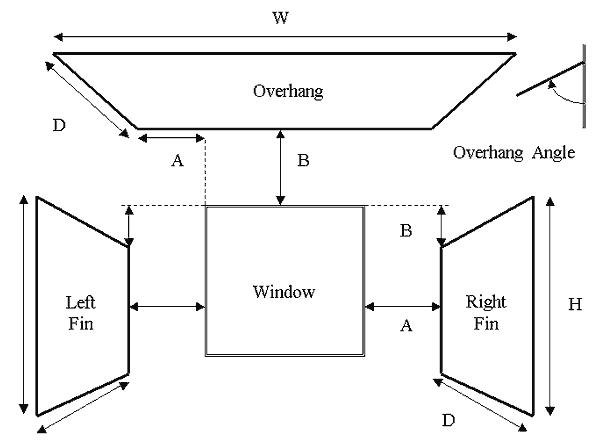

| Window Data Input Form |
|
Window Info

Acronym - A short description (up to 20 characters)
Description - A detailed description (up to 50 characters)
Select Glass Type - Select the fenestration type for the window. Clicking this button opens a list of all fenestration in the Project. User can then select a fenestration for the window from the list. If a suitable fenestration is not available in the list, you must first add (or build) the fenestration to your Project Resources before being able to select that fenestration for the window.
Usage - Selects window usage type.
SetBack - Distance that the window is recessed into the wall in feet.
Inside Vis Refl - Inside Visible Reflection is the amount of light reflected from the interior side of the window. Not user editable.
Infl Coef - Infiltration Coefficient specifies an infiltration flow coefficient used to compute the infiltration resulting from cracks in the window. Not user editable.
Internal Shading - Checking the box for Internal Shading will allow the user to specify the type of internal shading from a drop down box.
IECC 2012 402.3.3.2 Increased SHGC - If checked, will allow for a maximum SHGC of 0.4 for fenestrations that are located no less than 6 feet above the finished floor. This excpetion only applies to climate zones 1, 2, and 3.
Dimensions - Similar to Wall Data Input Form.
Shading - Shading (external) for windows is activated by checking the shading check box. A set of data input cells become visible where shading parameters can be entered. Shading surfaces include Overhangs, Left and Right Fins. Enter all data that is applicable.
The figure shown below is a basic representation of a window and shading as seen from outside. The dimensions are labeled on the figure and defined below:

Overhang A - Distance from left window edge to left corner of overhang. Units are in feet, 0.0 is the default, and there are no limits.
Overhang B - Distance from top of window to back edge of overhang. Units are in feet, 0.0 is the default, and there are no limits.
Overhang W - Width of overhang. Units are in feet, 0.0 is the default, and the range is 0.0 to no limits.
Overhang D - Depth of overhang. Units are in feet, 0.0 is the default, and the range is 0.0 to no limits.
Overhang Angle - Angle in degrees between overhang and window. When set at 90 degrees, the overhang is perpendicular to the window; if less than 90 degrees, it is tilted downward; if greater than 90 degrees, it is tilted upward. The range is 0 to 180 degrees.
Left/Right Fin A - Distance from left/right window edge to fin back edge. Units are in feet, 0.0 is the default, and there are no limits.
Left/Right Fin B - Distance that top of fin is below top of window. Units are in feet, 0.0 is the default, and there are no limits.
Left/Right Fin H - Height of fin. Units are in feet, 0.0 is the default, and the range is 0.0 to no limits.
Left/Right Fin D - Depth of fin. Units are in feet, 0.0 is the default, and the range is 0.0 to no limits.